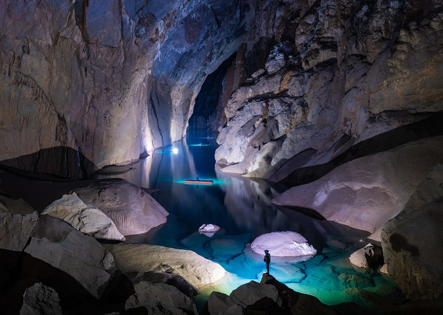
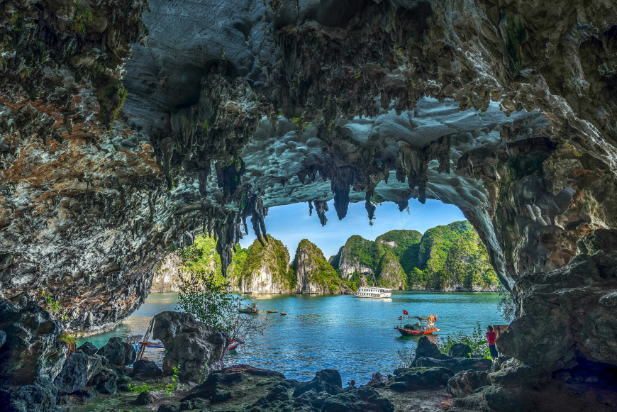
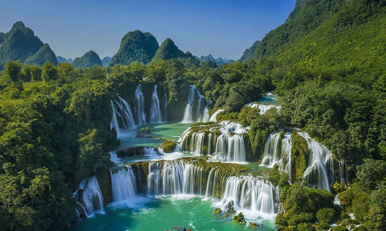
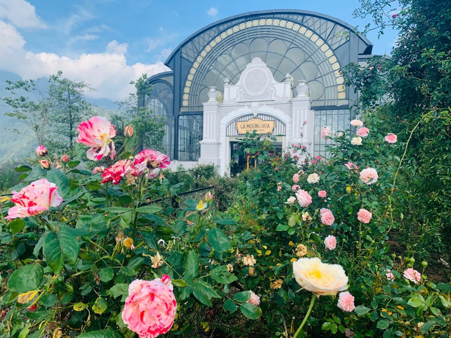
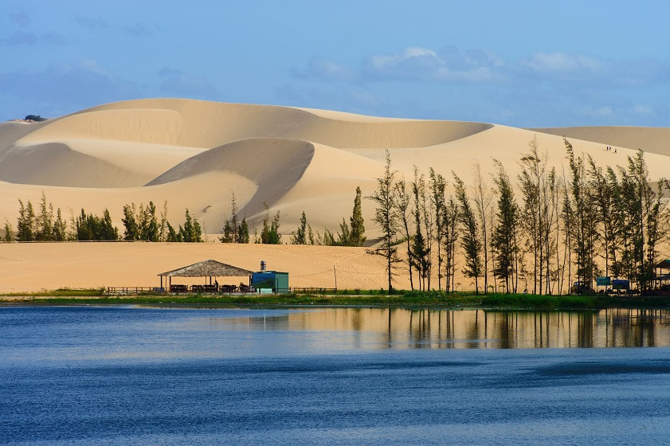
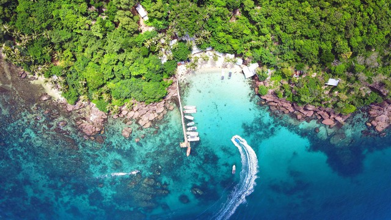
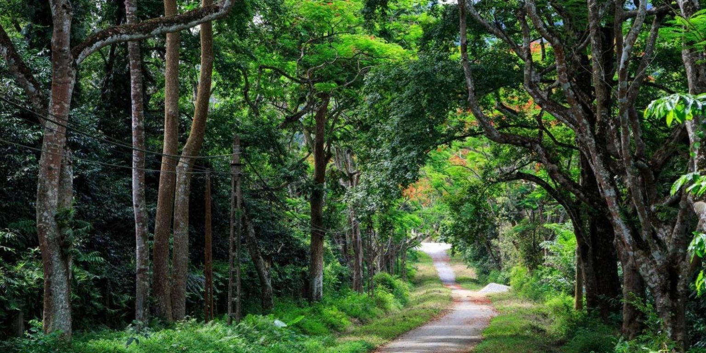

Việt Nam nổi tiếng với những cảnh quan thiên nhiên tuyệt đẹp. Du khách có thể khám phá núi non, rừng xanh, hang động, sông, thác nước và những bãi biển trong xanh.
Dưới đây là một số địa điểm thiên nhiên nổi tiếng mà bạn không nên bỏ qua khi khám phá Việt Nam.
Di chuột qua một hình ảnh bên dưới để hiển thị ở đây.






